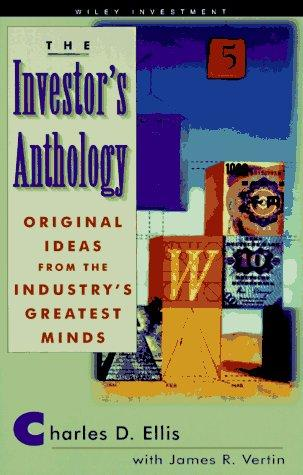

1972年，三十六岁的查尔斯·埃利斯（Charles D. Ellis）创立了投资咨询公司Greenwich Associates，此后三十年担任管理合伙人，把它做成了服务全球一百三十多个金融市场机构客户的研究公司。他更广为人知的身份是"输家的游戏"这一说法的提出者：1975年，他在《金融分析师杂志》（Financial Analysts Journal）发表文章《输家的游戏》（"The Loser's Game"），提出"职业基金经理能够跑赢市场"这一前提已经不成立，此文于1977年获格雷厄姆与多德奖，后来扩展成他的代表作《赢得输家的游戏》（Winning the Loser's Game）。埃利斯本人1959年毕业于耶鲁学院艺术史专业，1963年获哈佛商学院MBA，后又在纽约大学取得金融经济学博士学位。1997年至2008年，他出任耶鲁大学校董，与首席投资官大卫·斯文森（David Swensen）搭档主持投资委员会长达九年——斯文森正是那部经典《机构投资的创新之路》的作者，也是本资料库收录的另一本书。埃利斯谈及斯文森时说他"是个了不起的人——聪明、有创造力，又极守纪律"（"a wonderful human being—brilliant, creative, and disciplined"）。
《点津：来自大师的精彩篇章》原名The Investor's Anthology: Original Ideas from the Industry's Greatest Minds，1997年由John Wiley & Sons出版，共297页，由埃利斯与詹姆斯·维尔廷（James R. Vertin）共同编选。维尔廷是富国银行投资顾问公司（Wells Fargo Investment Advisors，后来发展为贝莱德旗下的Barclays Global Investors）的创始首席投资官，他带领的团队是指数基金的早期实践者之一，也率先把股息折现模型用于计算机驱动的主动管理策略；为表彰他对投资研究与教育的贡献，CFA协会研究基金会1996年设立了"詹姆斯·维尔廷奖"。这本书并非全新约稿，而是从两人此前主编的《投资经典》（Classics: An Investor's Anthology，1989年）与《投资经典II》（Classics II，1991年）——两部合计逾56篇文章的选集——中精选出53篇，重新按主题分为七个部分：概念与市场史、建议与观察评论、想象与消遣、创新与实证案例、投机与崩盘、预测分析与业绩评估、秘诀与格言。入选作者包括本杰明·格雷厄姆（Benjamin Graham）、沃伦·巴菲特（Warren Buffett）、约翰·梅纳德·凯恩斯（John Maynard Keynes）、菲利普·费雪（Philip Fisher）、T. 罗·普莱斯（T. Rowe Price）、罗伊·纽伯格（Roy Neuberger）、西德尼·霍默（Sidney Homer）等人。书中收录的一篇文章是历史学家弗雷德里克·刘易斯·艾伦（Frederick Lewis Allen）记述1929年大崩盘的《大牛市与大崩盘》，其中详细描写了10月29日"黑色星期二"当天纽交所成交1641万股、创下纪录，摩根大通等银行家出面救市却未能阻止恐慌抛售的过程。
这本书出版后，先锋集团（Vanguard）创始人约翰·博格（John C. Bogle）在封底题词中称其为"关于金融市场的永恒智慧，由业内最敏锐的头脑之一汇编而成，适合严肃投资者阅读"（"Eternal wisdom about the financial markets, compiled by one of the most astute minds in the field. A 'must read' for the serious investor."）。巴菲特的题词是"每一位投资者都会从这本书收录的经典之作中获益"（"Every investor will benefit from the classics found in this volume."）。高盛合伙人史蒂文·艾因霍恩（Steven G. Einhorn）写道，这本书"包含了一本好书应有的一切——智慧、洞见、历史视角与机锋"（"contains everything one would expect in a great book – wisdom, insight, historical perspective, and wit"）。中文版由江晓东翻译，2009年8月由上海财经大学出版社收入"世界资本经典译丛"出版，译者后记长达数页，篇幅约24万字。
翻开这本书，读者会先碰到凯恩斯把股票投机比作报纸选美比赛，往后几十页是格雷厄姆划定"投资"与"投机"的分界线，再往后翻到的是艾伦笔下1929年10月那个成交量破纪录的星期二。埃利斯与维尔廷编选时的取舍标准，是排除那些"过于晦涩或高深"的专业论文，只留下历经时间检验、被一代从业者传给下一代的文字——这与埃利斯自己在《输家的游戏》里的立场一致：多数职业基金经理跑不赢市场，与其追逐层出不穷的新方法，不如回到反复被验证过的老道理。这也是《点津》这个书名的来由：不是提供一套新体系，而是把前人已经点透的道理重新摆到读者眼前。